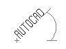
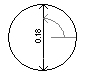

|
Rotation Property |
Specifies the rotation angle for the object.
Signature
object.Rotation
object
Attribute, AttributeReference, BlockRef, Dim3PointAngular, DimAligned, DimAngular, DimArcLength, DimDiametric, DimOrdinate, DimRadial, DimRadialLarge, DimRotated, DwfUnderlay, ExternalReference, MInsertBlock, MText, Raster, Shape, Text, Underlay, Wipeout
The objects this property applies to.
Rotation
Double; read-write
The rotation angle in radians.
Remarks
The rotation angle is relative to the X axis of the object's WCS with positive angles going counterclockwise when looking down from the Z axis toward the origin.
Raster: To display the raster image at the specified rotation, set the ShowRotation property to TRUE.
Text: The rotation angle is read-only for text whose Alignment property is set to acAlignmentAligned or acAlignmentFit.
 |
Text rotation angle |
 |
Dimension line angle |
| Comments? |